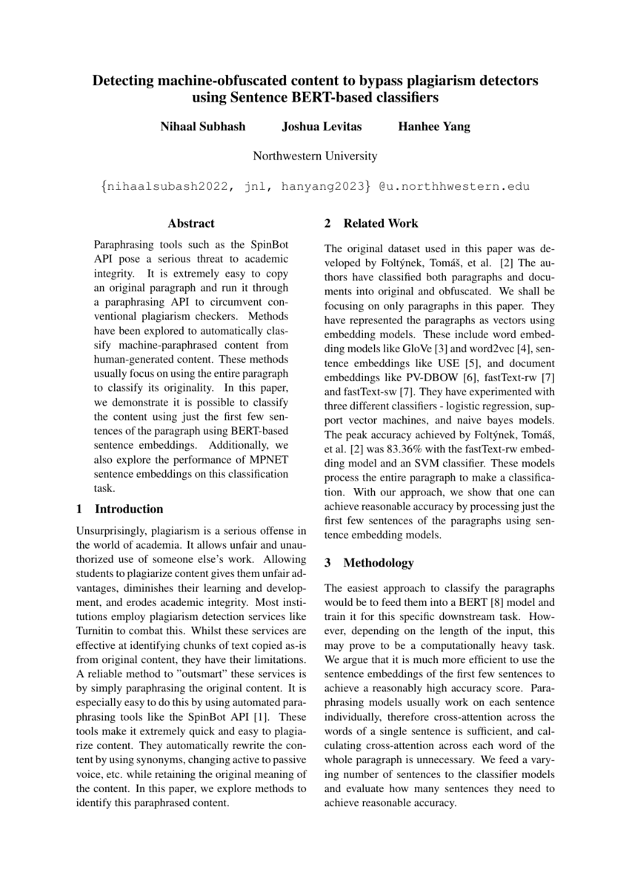
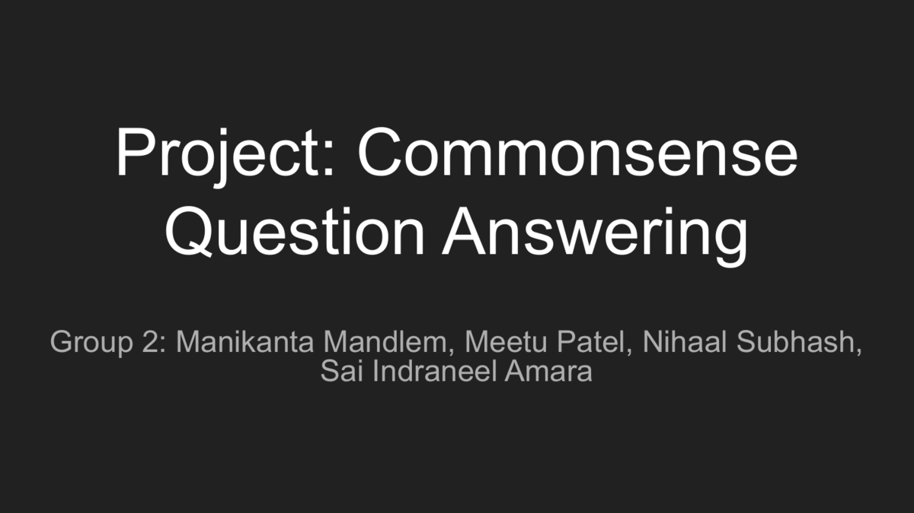
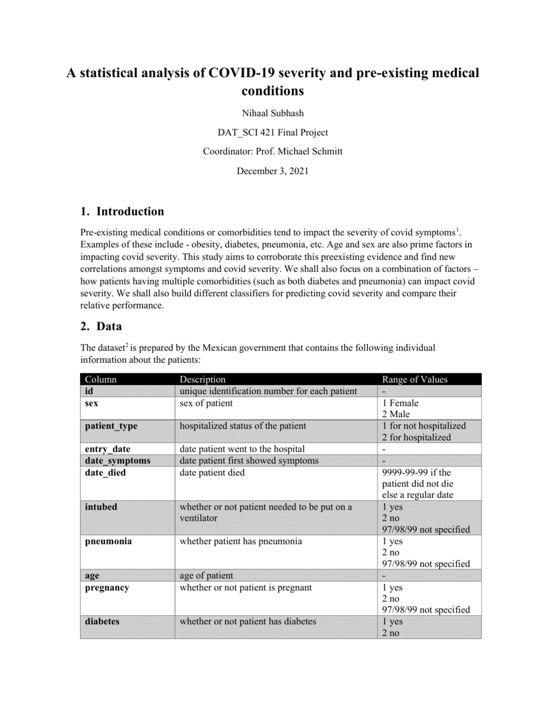

Hi! I'm Nihaal.
I recently finished my M.S. in Computer Science degree from Northwestern University.
I am interested in Machine Learning, Data Science and Software Engineering.
This is a brief overview of my projects, skills and background.
Keep scrolling to check out some of my selected projects!

- Designed a Deep Learning based web-application to generate captions for input image
- Based on an encoder-decoder model. Used Transfer Learning and Inception V3 for image feature extraction and LSTM and GloVe embeddings for linguistic caption generations
- Implemented in python using Tensorflow-Keras and NLTK and deployed on the web using Angular for frontend and Flask as backend.

- An Instagram inspired photo-sharing application with a focus on maximizing accessibility.
- Implemented using JavaScript, React, Flask, REST and PostgreSQL.

- Developed a software solution that, given a user generated prompt,
produces infotainment-type content, inspired by the style of TED Talks.
- The idea is that upon receiving a prompt, the
software will produce a video of educational value on the topic (image and audio).
- Finetuned the BERT model for intro and outro script generation.

- Developed a classification model to differentiate human-generated content from content generated by automated paraphrasing tools, such as the SpinBot API
- Utilized sentence embeddings generated by the SentenceBERT and MPNet models
- Achieved a peak accuracy of 89.00%, surpassing the previous state-of-the-art result of 83.36%
- Additionally, designed a smaller, efficient variant of the model that utilized only the first three sentences of the input paragraph, yet achieved an accuracy of 87.64%

- Designed a contextual AI assistant that parses recipes from allrecipes.com and guides the user through making the recipes in the form of a conversational interface
- Understands navigation utterances, context-based questions and answers user queries
- Implemented in python using RASA, NLTK and Spacy

- Pretrained the BERT language model on the CommonSenseQA dataset and fine-tuned on the OpenBookQA dataset for multiple choice question answering
- Attained accuracies of 71% and 58% on the OpenBookQA dataset with and without relevant fact respectively

- Analyzed how different medical conditions (as well as a combination of medical conditions) and other factors influence covid death rates and covid severity using tests like covariances and correlations.
- Developed various classifiers for predicting covid severity and death rates - Neural Networks, KNNs, Weighted KNNs, Naïve Bayes Classifiers, Decision Tree, and Random Forest and compared their relative performances.